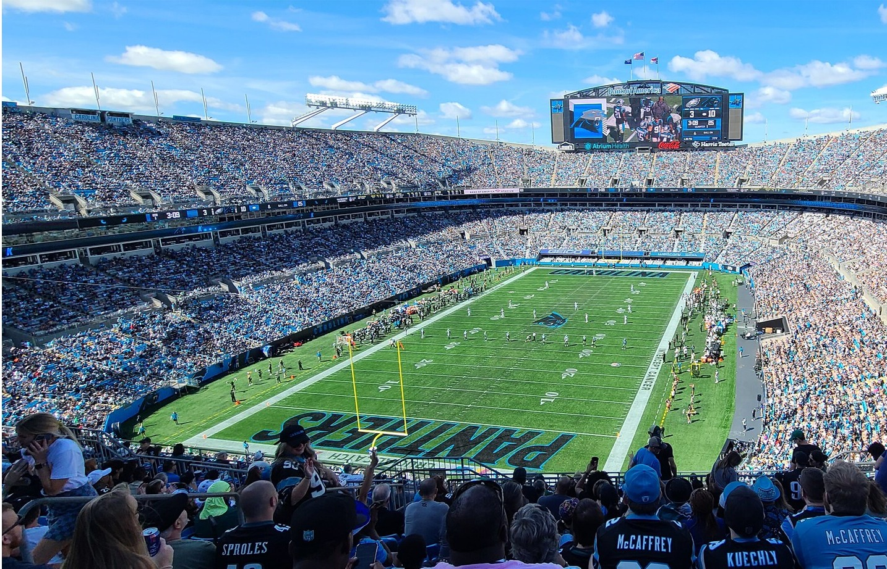
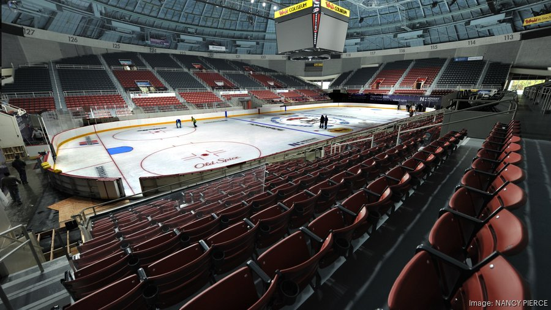
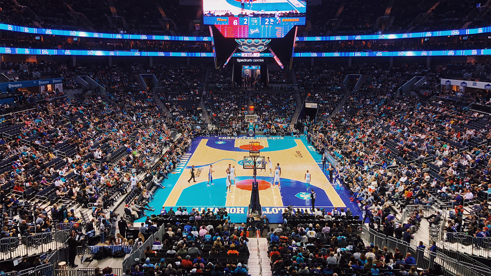

Here in Charlotte, the sports scene is very lively. We have teams for most popular sports, and most of the stadiums for our teams are located in uptown Charlotte.
Charlotte has sports teams for Hockey, Soccer, Basketball, and hosts the Carolina Panthers home games in uptown Charlotte at the Bank of America stadium. To support our teams, you can visit our home games at various stadiums depending on the sport being played.
To watch our home games, here is a list of the stadiums that host the events:
Charlotte Hornets (NBA): Spectrum Center
Carolina Panthers (NFL): Bank of America Stadium
Charlotte FC (MLS): Bank of America Stadium
Charlotte Checkers (AHL): Bojangles Coliseum
 Bank of America Stadium, © Stadiums of Pro Football
 Bojangles Colisuem, © The Business Journals
 Spectrum Center Stadium, © The Cypress of Charlotte